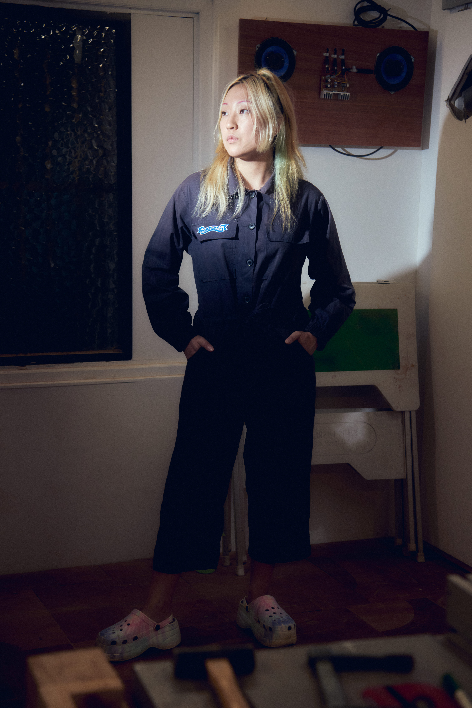
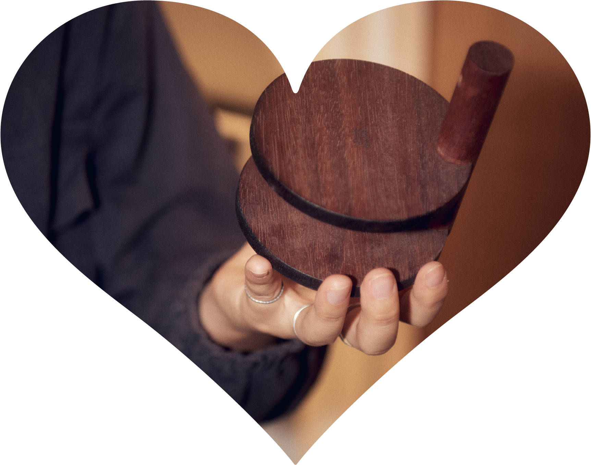
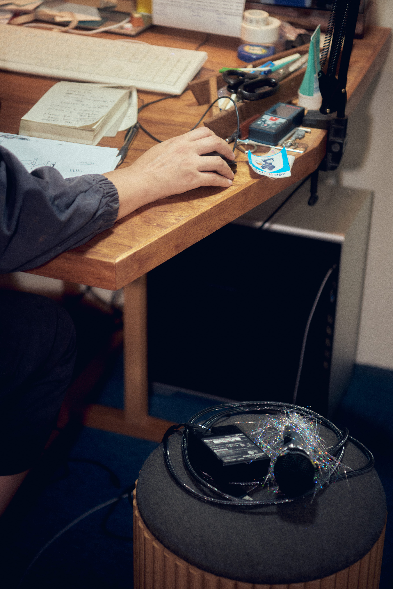
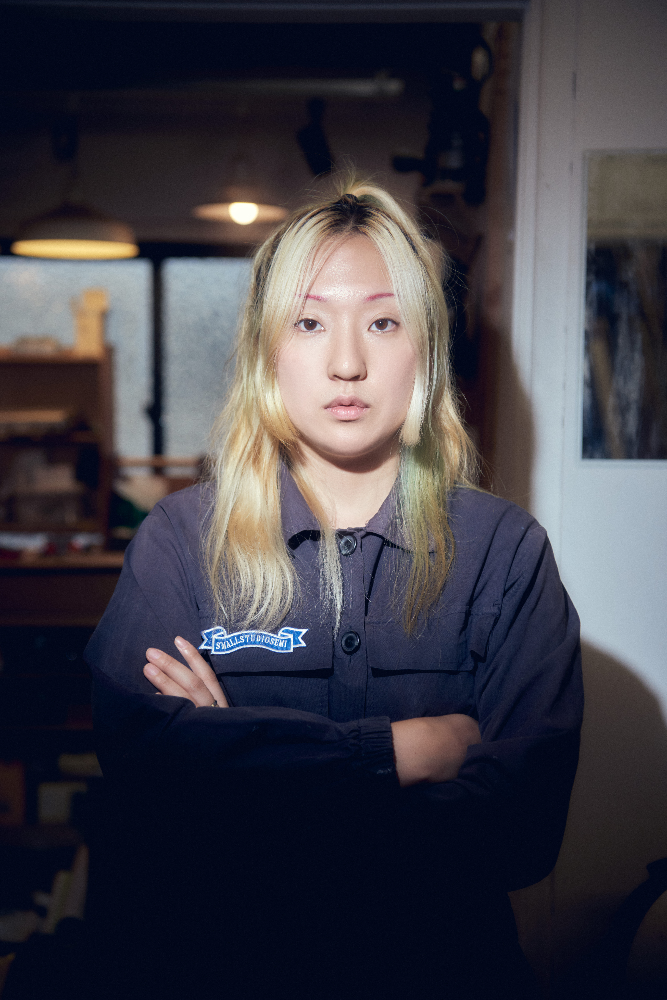

“남과 다른 나를 찾고 그것을 남들에게 보여주고
내가 이렇게 할 수 있다고 이야기하는 게 되게 중요해요.”
01
워커홀릭
02
타인과 다른 나를 찾기
03
균형잡기
04
저글링
05
여성이라는 위치성
06
불안감
유혜미는 스스로 배우고 익힌 목공 실력으로 2012년부터 1인 가구 공방 소목장 세미를 운영해오고 있다. 작업에 필요한 노동요를 찾으며 자신만의 컬렉션이 생겼고, 자연스럽게 음악을 트는 DJ도 하게 되었다. 파티장에서 드래그 의상과 메이크업을 한 그의 모습은 소목장 세미로 나설 때와 완전히 다르다. 두 가지 상반되어 보이는 자아를 어떻게 저글링하는지, 그것을 가능케하는 에너지와 동력은 무엇일지 궁금해하면서 그의 작업실 겸 자택을 찾았다. 우리는 각기 다른 일에 자신의 취향을 반영하고 그 긴장 아래 놓인 몸과 마음에 대해 이야기했다. 또한 취향을 드러내는 일과 여성이라는 위치에서 자신을 드러내는 일에 대한 생각도 들어보았다.

워커홀릭
가구를 만들 때 어디서 영감을 받으시곤 했나요? 제작보다도 영감을 받는 과정에서 취향이 반영되는 것 같아요.
공방 시작한 초기에 안 풀리고 그럴 때 민속박물관 이런 데 가서 보는 거예요. 옛날 사람들 어떻게 만들었지? 이거를 어떻게 사용하기 쉽게 만들었지? 왜 이렇게 만들었지? 이런 거 그냥 보면 되게 재밌거든요. 거기서 또 아이디어가 오는 경우가 있어서 나가서 계속 보고 아니면 인터넷으로도 많이 봐요. 저 사람 이거 저렇게 했네 되게 똑똑하다 이런 식으로.
전시 찾아다니는 것도 에너지, 시간이 많이 들잖아요. 그리고 잘 안될 때면 다음 달 생계 걱정도 있었을 텐데 어떻게 받아들이셨어요?
그냥 뭐 워커홀릭이어서 가능했던 것 같아요. 이게 되게 나쁜 거라 제가 이야기해서 다른 사람들이 따라 하지 않았으면 좋겠는데 저는 그때 그랬어요.
그냥 돈이 없으면 있던 거라도 홍보를 해서 막 팔아 치워요. 그리고 작업하다 보면 B급이 나오거든요. 가만히 갖고 있다가 돈이 필요할 때 B급을 공개해요. 그럼 진짜 빨리 팔리거든요.당시에 하루라도 온전히 쉬는 날이 없었어요. 확인해 보니까 세 달 만에 하루 쉬고 막 이러는 거예요. 그런 게 일상이었어요. ‘나 되게 웃기다. 세 달 만에 지금 오늘 처음 쉬는 거야’ 막 이러면서 그냥 심각하게 생각 안 한 거예요. 쉬는 게 너무 중요하다는 걸 지금은 알죠.
타인과 다른
나를 찾기
1인 가구 공방인 ‘소목장 세미’의 지속 가능성에 있어 중요한 게 있다면 무엇일까요?
제일 대표할 게 디자인이긴 해요. 시작했을 때 누구 해드리면 다른 분 소개해 주시고 그럼 또 새로운 작업하면서 배우는 것도 있고 그런 식으로 성장했어요. 부딪히면서 천천히 4-5년 동안 만든 게 있어요. 아무리 친구가 그냥 필요하다고 해서 만드는 거라도 디자인 진짜 잘하려고 노력을 많이 했어요. 내가 마음에 들 때까지 계속 디자인 연구해서 심지어 길 때는 제작 기간이 6개월까지 걸린 적도 있어요. 원래 가구는 만들 때 뗐다 붙였다 이런 게 말이 안 되는데 조소과 출신이니까 마음에 안 들면 뗐다가 막 여기저기 붙이기도 했어요.

과거 인터뷰에서 본인만의 독창적인 어떤 것이 필요하다고 했는데 그럼 혜미 씨가 그런 것들을 만들어 내는 과정이 있을까요?
저는 일단 되게 중요한 게 절대 남이 했던 거는 하지 말자. 웬만하면. 하지 말자. 왜냐하면 제가 소목장 세미를 하는 이유가 당연히 돈을 벌고 이런 것도 있지만 어떤 남과 다른 나를 찾고 그것을 남들에게 보여주고 내가 이렇게 할 수 있다고 이야기하는 게 되게 중요해요. 그래서 남이 했던 거를 비슷하게 하는 거는 의미가 없는 거예요.
나만의 가구를 만들어야 돼요. 역사적으로 봤을 때 유명한 디자이너들은 정말 명확한 자기 스타일이 있어요. 그것 때문에 유명해졌고 증명이 된 거예요. 내가 남들과 달라라고 이야기하는 것과 남들이 봤을 때도 “이 사람 가구가 너무 달라서 이 돈을 줘서 사야 돼” 라고 하는 거는 완전 다른 거잖아요. 소목장 세미는 그렇게 정점 찍고 싶은 욕심이 있죠.
그런데 디제잉은 다른 것 같아요. 다른 플레이를 하고 싶지만 남들이 다 좋아하는 플레이를 하고싶기도 해요. 내 장르를 남들이 다 좋아할 수 없잖아요. 그렇게 되고 싶지도 않고. 그래서 디제잉은 그냥 되는 대로 하는 것 같아요. 관객이 한 명이어도 정말 그 사람 잘 놀면 그날 되게 뿌듯해요.
균형잡기
목수와 디제잉 그 사이 긴장이 궁금했어요. 둘은 공통점이 더 많나요? 아니면 차이점이 더 큰가요?
베이스가 강한 음악과 작업할 때 쓰는 톱의 고음 소리가 어우러져요. 그 환경 속에서 제가 안정감을 얻어요. 목공과 디제잉 간의 만남이 가능하다는 점이 상호적인 것 같고 디제잉이 노동량이 없어 보일 수 있는데 엄청난 노동량이 필요해서 목공과 비슷한 것 같아요.
다른 점은 디제잉은 즉흥적이에요. 관객 반응에 따라서 셋을 바꾸기도 하고 변수가 많죠. 반면에 목공은 좀 더 시간이 있죠. 내가 가질 수 있는 시간이 있고 그 안에서 회복할 수도 있고 별로였던 걸 다시 고칠 수도 있고. 그런 것들이 크게 다른 것 같아요.
두 가지 일을 병행하면서 만들어지는 보상이 있을까요?
있어요. 보통 주중에 진득하게 앉아서 목공 작업을 해요. 계속 머리로 계획 세우고 만들어보는 정적인 작업을 해요. 비교적 다른 직업에 비해 정적이지 않을 수 있는데 제 기준에는 정적이에요.
그러고서 주말 밤에는 디제잉을 하면서 즉흥적인 걸로 다 발산이 되니까 쌓인 스트레스가 해소되는 거죠. 그래서 어떻게 보면 되게 좋은 서클이 됐죠.
저글링
반대로 그게 너무 다른 어떤 영역을 동시에 하다 보니까 충돌했던 적은 없어요?
충돌은 계속하고 있기는 하는데 그걸 충돌이라고 표현하기는 좀 애매하고 그냥 똑같은 난데 조금 그냥 다르다 이 정도로 표현을 하고 싶어요.소목장 세미라는 브랜드가 빡세게 말하면 고풍적인 느낌이 있어요. 정적이고 마이너하지만 고급스럽고, 중성적인 이미지들을 갖고 있어요. 반면 씨씨는 스스로 똘숙이라고 부르거든요. 멋있는 셋 틀려고 준비한 날에도 사람들의 반응이 좋으면 안에서 똘숙이가 나와서 자극적인 거 틀고 그래요.사실 소목장 세미와 씨씨가 동일 인물이라는 것을 밝힌지 얼마 안 되었어요. 왜냐하면 이게 매출에 영향이 있을지도 모른다는 생각을 한 거예요. 디제잉 하는 씨씨가 부끄럽고 이런 건 아니지만 부캐가 생계에 영향을 미치면 안 되잖아요. 저도 먹고살아야 되는데. 그래서 인터뷰를 하면 거의 분리해서 말해요. 그냥 디제이를 한다 정도만 하지 내가 씨씨고 어떤 음악 하고 이런 건 잘 얘기 안 해요. 씨씨일 땐 씨씨 이야기만 하고 직업은 목수다 이 정도만 했죠. 그런데 최근에는 사람들이 이미 너무 다 알아버려가지고.
그래서인지 인터넷에 올라온 사진 같은 게 너무 다르시더라고요. 계정의 톤도 다르고, 인상 깊었던 게 안경 착장도 그렇고 옷 스타일. 몸의 자세도 소목장 세미로 인터뷰할 때와 씨씨로 인터뷰할 때 되게 다르시더라고요.
씨씨는 일단 그냥 똘숙이니까 걔는 하고 싶은 대로 미친 사람처럼 사진을 찍고 소목장 세미는 프로페셔널 해 보이는 어떤 전문가의 그런 모습을 보여주려고 많이 하죠.


여성이라는
위치성
드래그도 하신다고 들었어요. 시작하시게 된 계기가 있나요?
5년 전에 보광동에 이사를 가게 되면서 지금 보광동 패밀리라고 부르는 친구들을 만나게 되었어요. 그 때 제가 RuPaul＇s Drag Race 에 빠져 있을 때였어요. 그래서 퀴어 서점을 하고 있는 박철이라는 친구에게 같이 하자고 했어요. 지금은 유튜브 채널도 많지만 그땐 그런 것도 없고 둘이 어떻게 하는 지도 몰랐는데 그냥 해 본거예요. 그걸 인스타그램에 올렸더니 다른 친구들도 “나도 할래”라고 해서 모이게 된 거예요. 그런데 이게 너무 웃긴게 드래그 하는 모임이 힐링 모임이 되어버렸어요. 저희는 전문가가 아니라 3시간씩 걸리는데 하면서 “어머 너 눈썹 세련이다~” 막 이러면서 칭찬, 바디 포지티브를 하게 되는 거예요. 그러면서 너무 돈독해졌어요.
그리곤 “한 번 나가보자”라고 되어서 이태원에 나갔어요. 이태원 해밀턴 뒷골목이 캣콜링도 많고 그래서 정말 싫어했어요. 그런데 여러 명이 함께 분장을 하고 있으니까 저도 모르게 저의 행동이 바뀌는 거예요. 남성들이 쳐다보면 “뭘 봐?”이러면서 당당하게 걷고 그러면서 해방감을 느꼈어요. 그러면서 디제이 할 때도 드래그를 하기 시작한 거죠.
여성 디제이들이 많이 없을 때니까 디제잉하면 “저 여자 뭐야?” 이런 말들이 관객층에서 육성으로 막 들려요. 이런 경험들을 할 때 저는 더 이상하게 보이고 싶었어요. 그래서 일부러 드래그 분장을 하고 더 그런 식으로 행동했었죠. 어떤 해방감, 극적인 게 있었죠.
불안감
혜미 님은 좋아하는 것과 하고 싶은 게 많은 사람인가요?
저는 궁금한 게 너무 많고, 하고 싶은 것도 너무 많고 새로운 거에 약간 미쳐 있어요. 저는 단점이라고 생각했어요. 왜냐하면 20대에는 산만하고 계속 쫓기만 해서 내실이 쌓이는 게 없다고 생각했어요. 그래서 상담할 때 “나는 너무 겉으로 보이는 이미지로만 살고 쉽게 질린다”라고 부정적으로 말했더니 “아니야, 그건 세련된 거고 네가 다른 사람보다 선구적으로 움직이는 거야”라고 하시더라고요. 그때 그렇게도 볼 수 있나 하고 되게 깜짝 놀랐어요. 그러면서 생각을 많이 바꾸긴 했어요.
그러면 본인이 새로운 것에 대한 자극이 필요한 사람이라고 정의하셨던 건가요?
그렇죠. 남들이 보기에는 되게 재미있게 산다고 생각하는데 저는 오히려 부족해서 자꾸 스스로 학대하면서 살았던 거죠. 만족스럽지가 않고 죽고 싶고 이런 이면이 있었던 거예요. 매일 밤 자기 전에 불안해서 울고 그랬어요. 꾸준히 들어오는 월급이 없고 당장 내일이 불안하다는 것은 계속 깔려 있었던 것 같아요. 고등학교 때부터 내 직업을 못 찾으면 어떡하지? 돈을 못 벌면 어떡하지? 남들이 좋다는 직업 말고 난 다른게 좋을게 뻔한데 그럼 난 낙오자인가? 이런 생각 하면서 불안해했어요. 지금은 제가 마음에 드는 생산적인 직업을 찾게 된 게 감사해요.